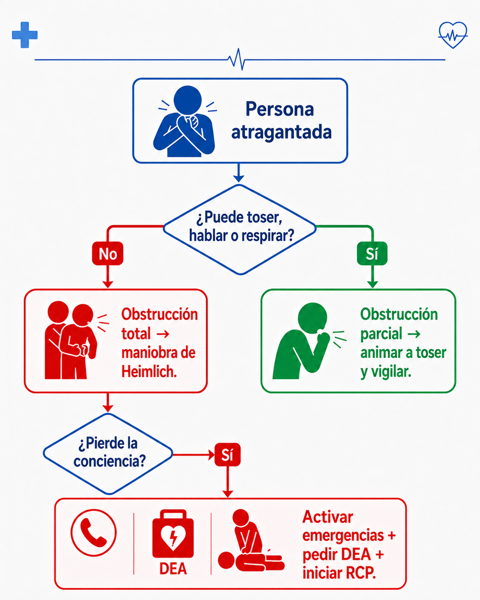

Obstrucción de vía aérea por cuerpo extraño y su relación con la RCP
La obstrucción de vía aérea por cuerpo extraño, también conocida como atragantamiento, se relaciona con la RCP porque una obstrucción grave puede impedir el paso de aire, causar pérdida de conciencia y evolucionar a una parada cardiorrespiratoria.
Mientras la persona está consciente, la prioridad es ayudar a expulsar el cuerpo extraño. Pero si pierde la conciencia, se debe activar el sistema de emergencias e iniciar RCP.
Por eso, este tema se incluye como una situación complementaria relacionada con la RCP: no siempre inicia como una parada cardíaca, pero puede convertirse en una emergencia que requiera compresiones torácicas.

En una obstrucción parcial todavía hay paso de aire.
La persona puede:
- Toser.
- Respirar parcialmente.
- Emitir sonidos.
- Hablar con dificultad.
- Llevarse las manos al cuello.
Qué hacer en obstrucción parcial:
Se debe animar a la persona a seguir tosiendo, porque la tos puede ayudar a expulsar el objeto.
No se deben realizar maniobras bruscas si la persona puede toser con fuerza, respirar o hablar, porque esto podría empeorar la obstrucción.
En una obstrucción total no hay paso efectivo de aire.
La persona puede:
- No hablar.
- No toser.
- No respirar.
- Llevarse las manos al cuello.
- Mostrar angustia intensa.
- Presentar coloración azulada en labios o piel.
- Perder la conciencia si no se resuelve la obstrucción.
¿Qué hacer en obstrucción total con persona consciente?
Se debe realizar la maniobra de Heimlich.
Ubícate detrás de la persona.
Rodea su cintura con ambos brazos.
Coloca un puño cerrado por encima del ombligo y debajo del esternón.
Sujeta el puño con la otra mano.
Realiza compresiones rápidas hacia adentro y hacia arriba.
Continúa hasta que el objeto salga o la persona pierda la conciencia.
Si la persona es más pequeña, más grande o presenta condiciones especiales, la posición debe adaptarse sin perder el objetivo: generar presión abdominal hacia adentro y arriba.
Si la persona pierde la conciencia durante un atragantamiento:
Colócala cuidadosamente en el suelo.
Activa el sistema de emergencias o confirma que alguien lo haga.
Pide un DEA si está disponible.
Inicia RCP.
Antes de ventilar o revisar la boca, retira el objeto solo si es visible y fácil de extraer.
No introduzcas los dedos a ciegas.
Continúa RCP hasta que llegue ayuda, la persona respire normalmente o alguien capacitado te releve.
La obstrucción de vía aérea se relaciona con RCP porque:
Una obstrucción total puede causar falta de oxígeno.
La falta de oxígeno puede llevar a pérdida de conciencia.
Si la persona queda inconsciente y no respira normalmente, se debe iniciar RCP.
Las compresiones torácicas pueden ayudar a generar presión y favorecer la expulsión del cuerpo extraño.
Si una persona atragantada pierde la conciencia, la atención cambia: se debe iniciar RCP.
No introduzcas los dedos a ciegas en la boca, porque puedes empujar más el objeto.
Mientras la persona pueda toser con fuerza, anímala a seguir tosiendo y vigílala de cerca.
Observa el caso y decide: ¿es obstrucción parcial, obstrucción total o requiere inicio de RCP?